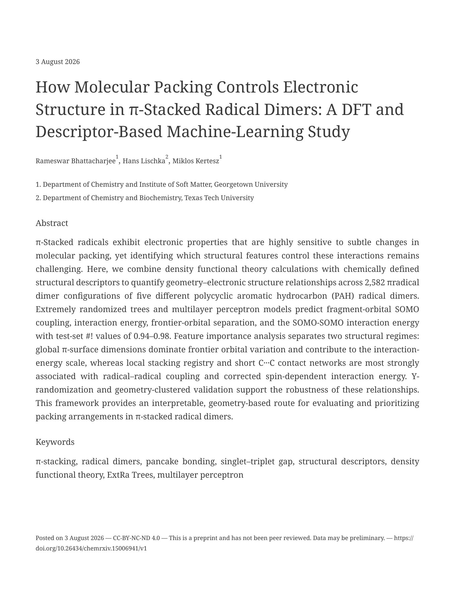

ChemRxiv preprint · 2026 · Under revision at JCIM
How Molecular Packing Controls Electronic Structure in π-Stacked Radical Dimers: A DFT and Descriptor-Based Machine-Learning Study
First & corresponding authorInterpretable Extra Trees and neural-network models connect molecular packing to four electronic properties across 2,582 configurations of five radical-dimer families, achieving test-set R² values of 0.94–0.98 with rigorous geometry-clustered and Y-randomization validation.